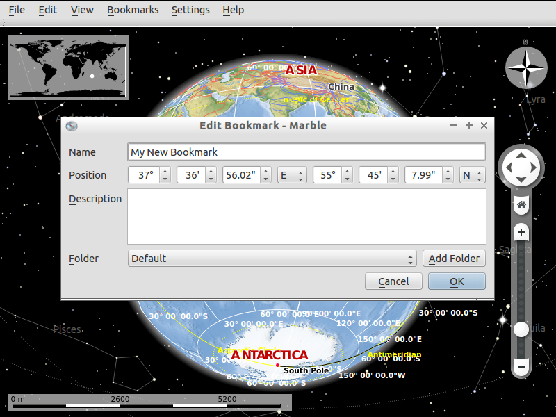

Guide de démarrage rapide Marble¶
Marble est un programme open source de KDE Education Project similaire à NASA World Wind ou Google Earth. En plus de choisir un certain nombre de cartes à afficher sur votre globe (y compris OpenStreetMap), nous vous encourageons à inclure un widget KDE Marble dans votre application.
Contents
Modifier l’affichage¶
- Escaladez le globe en faisant pivoter la roue de votre souris.
- Pour vous déplacer, appuyez sur le bouton gauche de votre souris et déplacez-le.
Marble a 11 points de vue (thèmes) différents :
- Atlas
- OpenStreetMap
- Vue satellite
- La Terre de nuit
- Carte historique de 1689
- Lune
- Carte simple
- Précipitations (décembre)
- Précipitations (juillet)
- Température (décembre)
- Température (juillet).
Trouver un emplacement¶
Pour trouver un emplacement, entrez son nom dans la ligne de recherche en haut du panneau « Search ». Lorsque vous commencez à taper, les suggestions ci-dessous la ligne de recherche apparaîtront comme ceci :
Ajouter un signet¶
Utilisez des signets dans Marble pour vous souvenir de l’emplacement de quelque chose.
Pour ajouter un signet, appuyez sur le bouton gauche de votre souris et cliquez sur « Add bookmark ». Une fenêtre apparaîtra comme ceci :
Écrivez le nom, la description et le dossier de destination du signet
Cliquez sur le bouton « Ok ». Ensuite, le signet apparaîtra.
Pour gérer les signets, rendez-vous sur « Bookmarks->Manage Bookmarks ».

{kind=link}
{kind=link}
{kind=link}
{kind=link}
{kind=link}
Choses à essayer¶
Essayez d’utiliser la fonction Routage. Voir la documentation documentation de Marble pour obtenir de l’aide.